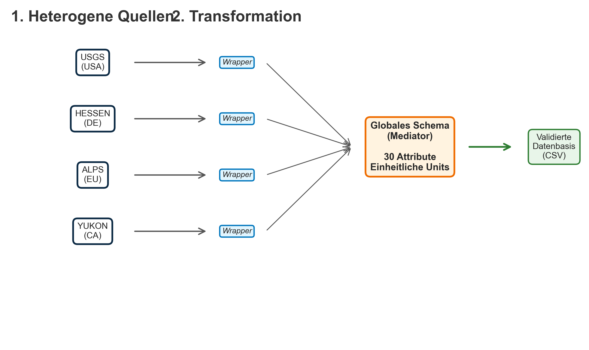
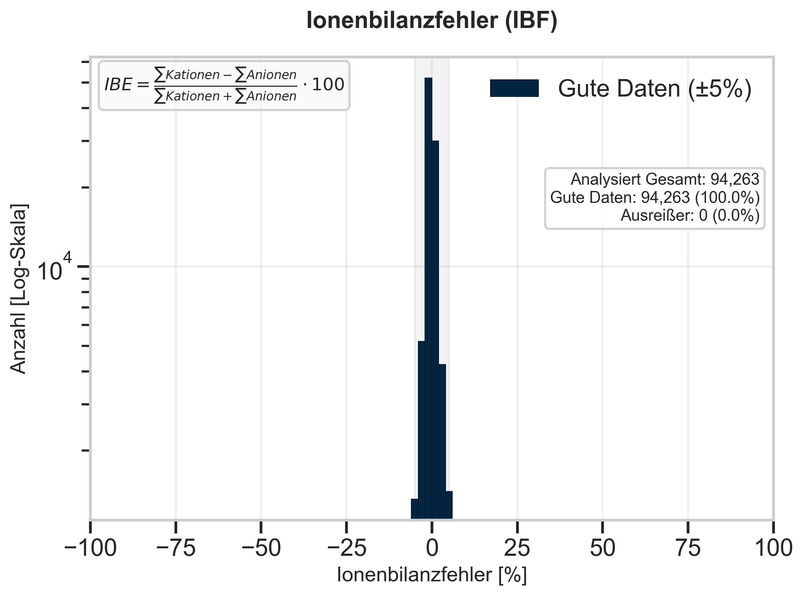
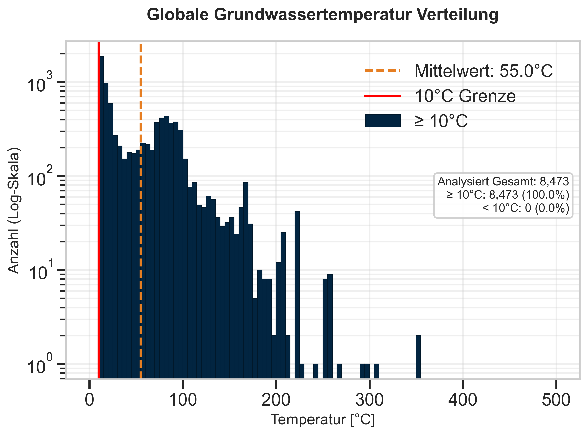

In der modernen Hydrogeochemie stellt die Anwendung von Machine Learning (ML) Algorithmen neue Anforderungen an die Datenverfügbarkeit.
Problemstellung: Global existieren riesige Mengen an Wasseranalysen (Big Data), jedoch liegen diese in extrem heterogener Form vor ("Daten-Silos").
"Die manuelle Aufbereitung ist zeitintensiv und fehleranfällig. Ziel ist die Automatisierung dieser Preprocessing-Pipeline."
Zur Lösung der Heterogenität wurde eine Mediator-Wrapper-Architektur
implementiert.
Wrapper (Adapter): Übersetzen 13 quellenspezifische Strukturen in eine
einheitliche Sprache.
Mediator (Global Schema): Mappt alle Daten auf 30
Ziel-Attribute in Standard-Einheiten (mmol/L, °C).
Kationen: Na⁺, Ca²⁺, Mg²⁺ | Anionen: Cl⁻, HCO₃⁻, SO₄²⁻

Qualitätskontrolle durch Ladungsbilanzierung.
IBE = (Σ Kationen - Σ Anionen) / (Σions) * 100
Nur Datensätze mit ± 5% IBE ("Good Records") werden akzeptiert.

Analyse der Wassertemperaturen als Indikator für geothermische Zirkulationssysteme.

Erfolgreiche Implementierung einer vollautomatischen ETL-Pipeline. Millionen von Rohdatenpunkten wurden in eine validierte, chemisch neutrale Datenbank überführt. Daten-Heterogenität wurde architektonisch gelöst.
Einsatz von Self-Organizing Maps (SOM) auf der bereinigten Datenbasis. Ziel: Unüberwachtes Clustering zur Erkennung von Gesteins-Wasser-Interaktionen und genetischen Grundwassertypen in hochdimensionalen Räumen.